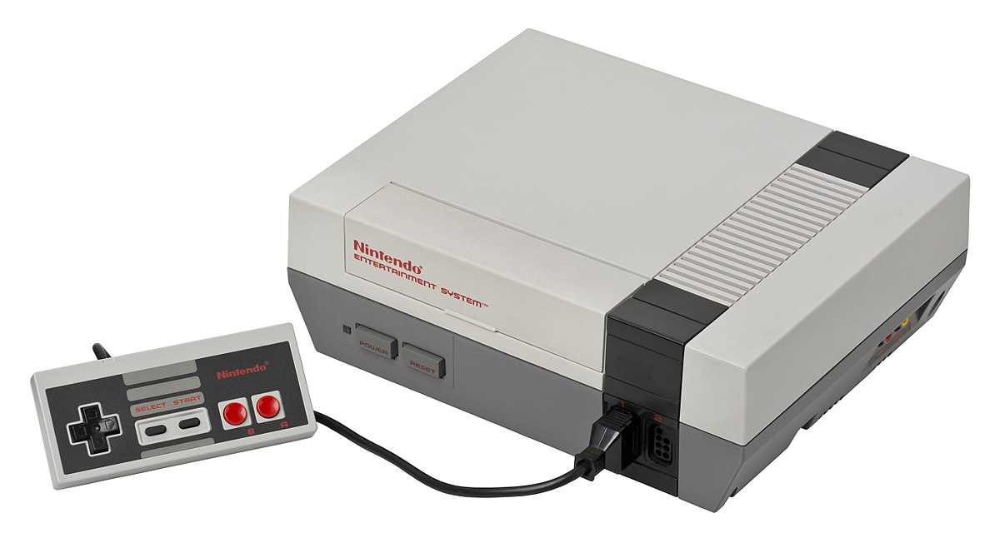
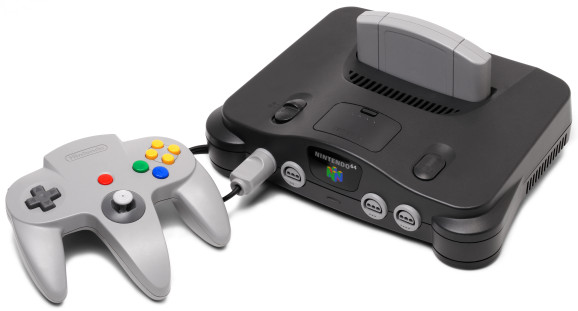
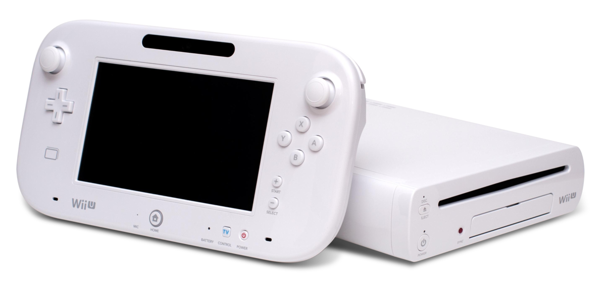

Boutique
À propos
 Manette
Manette Accessoires
Accessoires Écrans
Écrans Jeux
Jeux Découverte rétro
Découverte rétroCe site web est un portail pour tout ce qui est en lien avec les platformes informatiques tels que les ordinateurs et consoles
Historique des consoles de Nintendo
-

1. Nintendo Entertainment System (NES)
1983Ceci est du text décrivant la console et blablablabla
-
2. Super Nintendo (SNES)
1990Ceci est du text décrivant la console et blablablabla

-

3. Nintendo 64
1996Ceci est du text décrivant la console et blablablabla
-
4. Nintendo GameCube
2001Ceci est du text décrivant la console et blablablabla

-
5. Wii
2006Ceci est du text décrivant la console et blablablabla

-

6. Wii U
2012Ceci est du text décrivant la console et blablablabla